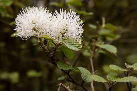

Hamamelidaceae
Witch-hazel Family
Hamamelidaceae is a family of deciduous or evergreen shrubs and trees, known for often bearing distinctive star-shaped (stellate) hairs. Leaves are typically simple and alternate, often with an asymmetrical base. The flowers, frequently appearing in late fall or winter in temperate species, are often characterized by 4 or 5 long, strap-like petals (though petals can be reduced or absent). The fruit is typically a distinctive woody capsule that often splits explosively.
Overview
The Hamamelidaceae family includes about 25-30 genera and 100-140 species, distributed primarily across temperate and subtropical regions of Asia, North America, Madagascar, and parts of Africa. They often exhibit disjunct distributions, suggesting an ancient origin and fragmentation. Well-known members include witch-hazels (Hamamelis), winter-hazels (Corylopsis), Fothergilla, and Persian ironwood (Parrotia persica). The Sweetgums (Liquidambar), traditionally included here, are now often placed in the separate family Altingiaceae.
Many species are valued horticulturally for their unusual flowering times (fall or winter), unique strap-like petals, attractive foliage, and sometimes vibrant fall color. The family belongs to the order Saxifragales, a diverse group within the core eudicots.
Economically, the most significant product is witch hazel extract, derived primarily from the bark and leaves of North American Hamamelis virginiana, used in cosmetics and topical medicines for its astringent properties. Some species provide timber, though not usually on a large commercial scale.
Quick Facts
- Scientific Name: Hamamelidaceae
- Common Name: Witch-hazel family
- Number of Genera: Approximately 25-30
- Number of Species: Approximately 100-140
- Distribution: Temperate and subtropical Asia, North America, Madagascar, Africa.
- Evolutionary Group: Eudicots - Core Eudicots - Order Saxifragales
Key Characteristics
Growth Form and Habit
Deciduous or evergreen shrubs and small to large trees. A common feature is the presence of distinctive star-shaped (stellate) or branched hairs on leaves, twigs, buds, and/or floral parts.
Leaves
Leaves are usually alternate (rarely opposite), simple, and often have an asymmetrical base (similar to elms or basswoods). Margins can be entire, toothed (serrate/dentate), or sometimes lobed (e.g., Liquidambar). Venation is typically pinnate or palmate. Stipules are usually present, paired at the base of the petiole, but often fall off early (caducous), leaving small scars.
Inflorescence
Inflorescences are variable, often appearing as dense clusters, heads, spikes, or racemes, located either terminally or in leaf axils. Flowers often bloom before the leaves emerge in spring, or distinctively in late fall or winter for genera like Hamamelis.
Flowers
Flowers are usually bisexual (sometimes unisexual with plants monoecious or andromonoecious) and typically radially symmetrical (actinomorphic). They are often 4- or 5-merous.
- Calyx: Sepals usually 4 or 5, fused at the base, often small and persistent in fruit.
- Petals: Usually 4 or 5, free. They are often characteristically long, linear or strap-like, sometimes crinkled in bud, and typically yellow, orange, red, or greenish. In some genera (e.g., Fothergilla, Parrotia), petals are reduced or absent, with showiness provided by stamens or bracts.
- Androecium: Stamens usually 4 or 5 (sometimes more), typically alternating with the petals. Staminodes (sterile stamens) are often present, alternating with the fertile stamens, sometimes scale-like or functioning as nectaries.
- Gynoecium: Ovary is usually semi-inferior (partly sunk into the receptacle), sometimes superior or fully inferior. It is typically composed of 2 fused carpels, forming a 2-locular ovary (rarely 1-locular). Placentation is usually axile, with one to many ovules per locule. There are typically 2 distinct styles, which are often persistent on the fruit.
Fruits and Seeds
The fruit is characteristically a hard, woody or leathery capsule, typically 2-valved, splitting open from the apex (loculicidal dehiscence). The persistent calyx often remains at the base, and the two persistent styles often form beak-like projections at the apex. Dehiscence is frequently explosive, forcibly ejecting the seeds. Seeds are usually 1 or 2 per locule, often hard, shiny, sometimes winged (e.g., Liquidambar). Endosperm is present.
Chemical Characteristics
The family is rich in tannins (especially hydrolyzable tannins like hamamelitannin in Hamamelis), flavonoids, and gallic acid derivatives, contributing to the astringent properties of witch hazel extract. Essential oils are also present in some species.
Field Identification
Identifying Hamamelidaceae often involves looking for the shrub/tree habit, alternate simple leaves (often asymmetrical), stellate hairs, distinctive flowers (especially strap-like petals or late blooming time), and woody capsule fruits.
Primary Identification Features
- Habit: Shrub or tree.
- Hairs: Often star-shaped (stellate) hairs present on young growth/leaves (use hand lens).
- Leaves: Alternate, simple, often with asymmetrical base, stipules present (may fall early).
- Flowers: Often 4-5 merous; petals frequently long, strap-like, crinkled (yellow/red/orange), sometimes absent. Often bloom in fall, winter, or early spring.
- Ovary: Usually semi-inferior.
- Fruit: Woody, 2-valved capsule, often with 2 persistent styles at the apex. Often explosive dehiscence.
Secondary Identification Features
- Stamens: Often 4-5 fertile stamens alternating with staminodes.
- Calyx: Often persistent at base of fruit.
- Fall Color: Can be notable in deciduous species.
Seasonal Identification Tips
- Fall/Winter/Early Spring: Look for the distinctive flowers of Hamamelis, Corylopsis, Parrotia.
- Spring/Summer: Identify by leaves (alternate, simple, often asymmetric base, check for stellate hairs) and buds. Look for developing or mature capsules from previous seasons. Fothergilla flowers in spring (petal-less, showy stamens).
- Fall: Check for fall foliage color and maturing capsules.
Common Confusion Points
Shrubs and trees with alternate simple leaves can be confused:
- Platanaceae (Sycamore/Plane Tree): Also in Saxifragales. Large trees with alternate, distinctly palmately lobed leaves and characteristic peeling bark. Flowers/fruits are in dense spherical heads, not strap-petaled flowers or capsules.
- Betulaceae (Birch family): Trees/shrubs with alternate simple leaves, but flowers are unisexual in catkins, and fruit is a small nutlet or samara. Lack stellate hairs.
- Ulmaceae (Elm family): Trees/shrubs with alternate simple leaves often with asymmetric bases, but flowers are small, lack petals, and fruit is a flat samara.
- Tiliaceae (Linden/Basswood family): Trees with alternate, simple, heart-shaped leaves often with asymmetric bases, but flowers are distinct (fragrant, yellowish, with bract), and fruit is a nutlet.
The combination of alternate simple leaves (often asymmetric, no stipule scar encircling twig), frequent presence of stellate hairs, often strap-like petals (or petal-less flowers with showy stamens), semi-inferior ovary, and woody 2-valved capsule with persistent styles is characteristic of Hamamelidaceae.
Field Guide Quick Reference
Look For:
- Shrub or tree
- Stellate hairs (often)
- Alternate, simple leaves (often asymmetric base)
- Stipules present (may fall early)
- Flowers with 4-5 strap-like petals (often yellow/red) OR petals absent
- Often blooms fall/winter/early spring
- Ovary usually semi-inferior
- Fruit a woody 2-valved capsule
- 2 persistent styles on fruit
Key Variations:
- Presence/absence/shape of petals
- Flowering season
- Leaf shape (toothed vs. lobed vs. entire)
- Deciduous vs. Evergreen
Notable Examples
Includes important ornamental shrubs and the source of witch hazel extract.

Hamamelis spp.
Witch-hazel
Deciduous shrubs or small trees known for their unusual flowering time, typically late fall or winter. Flowers have 4 long, crinkled, strap-like petals, usually yellow or reddish-orange. Leaves are alternate with wavy margins and often asymmetrical bases. H. virginiana is the source of commercial witch hazel extract.

Liquidambar styraciflua
Sweetgum
A large deciduous tree native to North America, famous for its star-shaped, palmately lobed leaves and excellent fall color. Produces distinctive spiky, ball-like aggregate fruits composed of many capsules. (Note: While traditionally placed in Hamamelidaceae, Liquidambar is now often segregated into its own family, Altingiaceae, based on molecular data).

Fothergilla spp.
Fothergilla / Witch Alder
Deciduous shrubs native to the southeastern USA. Known for their distinctive, fragrant, bottlebrush-like flower spikes produced in spring before or with the leaves. Flowers lack petals but have numerous showy white stamens with yellow anthers. Leaves often have good fall color.

Corylopsis spp.
Winter-hazel
Deciduous shrubs or small trees native to Asia. Valued for their fragrant, pale yellow flowers borne in drooping racemes in late winter or early spring before the leaves emerge. Flowers have 5 relatively small petals and 5 stamens. Leaves resemble hazel (Corylus) leaves.
Phylogeny and Classification
Hamamelidaceae belongs to the large and diverse order Saxifragales, which is positioned as one of the major lineages within the core eudicots, separate from the large rosid and asterid clades. Saxifragales includes a wide array of plants, from succulent Crassulaceae and herbaceous Saxifragaceae to woody families like Hamamelidaceae, Platanaceae, and Paeoniaceae.
Within Saxifragales, Hamamelidaceae is part of a core woody clade. Molecular studies suggest its closest relatives are Altingiaceae (Sweetgum family, containing only Liquidambar, often formerly included within Hamamelidaceae), Cercidiphyllaceae (Katsura tree family, containing only Cercidiphyllum), and Daphniphyllaceae. The exact relationships among these families and Hamamelidaceae itself are complex and subject to ongoing research, reflecting rapid diversification early in the order's history.
Position in Plant Phylogeny
- Kingdom: Plantae
- Clade: Angiosperms (Flowering plants)
- Clade: Eudicots
- Clade: Core Eudicots
- Order: Saxifragales
- Family: Hamamelidaceae
Evolutionary Significance
Hamamelidaceae represents an important lineage within the Saxifragales order:
- Core Eudicot Diversity: Contributes to understanding the relationships and diversification among major core eudicot lineages outside of rosids and asterids.
- Floral Variation: Exhibits interesting floral features, such as the evolution of strap-like petals, petal reduction, and the presence of staminodes, offering insights into floral development and pollination biology.
- Biogeography: The often disjunct distributions of genera (e.g., between eastern Asia and eastern North America) reflect ancient connections and long evolutionary histories, providing evidence for past continental configurations and climate change.
- Relictual Features?: While part of the core eudicots, some features like wind pollination in certain groups and relatively simple flower structures might echo earlier evolutionary stages.
- Economic Importance: Provides valuable ornamental plants and the commercially significant witch hazel extract.